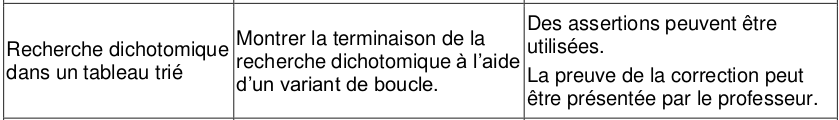
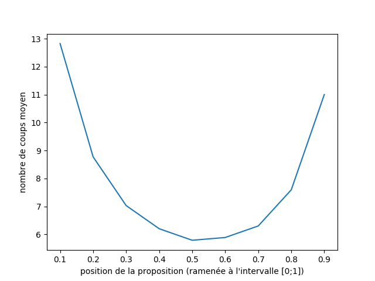

Chapitre 5: Dichotomie⚓︎
ou comment rechercher efficacement dans une liste triée ?


«dichotomie» se dit en anglais binary search.
1. Introduction : recherche d'une valeur dans une liste⚓︎
1.1 Préambule⚓︎
De l'importance de bien ranger ses affaires
Les premiers algorithmes «célèbres» que nous avons découverts étaient des algorithmes de tri.
Quel est l'intérêt de trier ses données ?
-
l'intérêt immédiat est d'en tirer un classement : quelle est la plus grande (ou plus petite) valeur, la deuxième, la troisième... On s'en sert donc évidemment pour déterminer une valeur optimale, un gagnant dans une compétition, etc. Mais il y a une autre raison plus importante.
-
Trier ses données permet de rechercher plus rapidement une valeur précise parmi celles-ci.
Exemple : pouvez-vous deviner la couleur à laquelle je pense ?
coul = ["bleu", "jaune", "rouge", "vert", "violet", "marron"]
Toutes les méthodes (proposition des valeurs dans l'ordre, au hasard, dans l'ordre inverse...) sont équivalentes : elles sont toutes aussi mauvaises, aucune stratégie n'est possible car les données ne sont pas triées. Si je suis à la recherche de la valeur "vert", le fait de piocher "rouge" ne me donnera aucune indication sur le fait que je devrais chercher plus à gauche à plus à droite que l'endroit où j'ai pioché.
Il faudrait pour cela que la liste soit triée (et donc qu'elle soit «triable», ce qui n'est pas toujours le cas !). C'est donc le cas dans lequel nous allons nous placer dans toute la suite de ce cours :
 Dans toute la suite, nous rechercherons un élément dans une liste d'entiers triée dans l'ordre croissant.
Dans toute la suite, nous rechercherons un élément dans une liste d'entiers triée dans l'ordre croissant.
1.2 Contexte de recherche⚓︎
Considérons donc la liste lst suivante :
lst = [2, 3, 6, 7, 11, 14, 18, 19, 24]
L'objectif est de définir un algorithme de recherche efficace d'une valeur arbitraire présente dans cette liste.
1.3 Méthode naïve : recherche par balayage⚓︎
C'est la méthode la plus intuitive : on essaie toutes les valeurs (par exemple, dans l'ordre croissant) jusqu'à trouver la bonne.
Exercice 1
Écrire un code permettant d'afficher l'indice de la valeur 14 dans la liste lst = [2, 3, 6, 7, 11, 14, 18, 19, 24].
Exercice 2
Écrire une fonction trouve(lst, val) qui renvoie l'indice d'une valeur val dans une liste lst. Si la valeur val n'est pas trouvée, on renverra None.
1.3 Complexité de la méthode naïve⚓︎
Complexité de la méthode naïve 
Dans le cas d'une recherche naïve, le nombre (maximal) d'opérations nécessaires est proportionnel à la taille de la liste à étudier. Si on appelle \(n\) la longueur de la liste, on dit que cet algorithme est d'ordre \(n\), ou linéaire, ou en \(O(n)\).
Remarque : La méthode naïve n'utilise pas le fait que la liste est triée, on aurait pu aussi bien l'utiliser sur une liste non triée.
2. Recherche dichotomique⚓︎
2.1 Introduction : le jeu du «devine un nombre entre 1 et 100»⚓︎
Règles du jeu
Si je choisis un nombre entre 1 et 100, quelle est la stratégie optimale pour deviner ce nombre le plus vite possible ?
(à chaque étape, une indication (trop grand, trop petit) permet d'affiner la proposition suivante)
Réponse attendue : la meilleure stratégie est de couper en deux à chaque fois l'intervalle d'étude. On démarre de 50, puis 75 ou 25, etc.
Il convient toute fois de remettre en question cette méthode qui paraît naturellement optimale : si je propose 90 comme nombre de départ, j'ai certes moins de chance que le nombre soit entre 90 et 100, mais s'il l'est, j'ai gagné un gros avantage car mon nouvel intervalle est très réduit.
Notion d'espérance probabiliste
Déterminer si un risque vaut la peine d'être pris passe par la compréhension de la notion d'espérance probabiliste. Exemple : "On lance un dé, s'il tombe sur le 6 vous recevez 8 euros, sinon vous me donnez 1 euro. Voulez-vous jouer ?"
\(E(X) = 8 \times \frac{1}{6} + (-1) \times \frac{5}{6} = \frac{8}{6}-\frac{5}{6}=\frac12\)
En moyenne, on gagnera 50 centimes par partie, il faut donc jouer.
Le graphique ci-dessous représente le nombre de coups moyens (sur 10 000 parties simulées)

Interprétations et remarques
- si le choix se porte toujours sur le nombre situé à la moitié de l'intervalle (0.5), le nombre de coups moyen avant la victoire (sur 10 000 parties) est environ 6.
- si le choix se porte toujours sur le nombre situé à 90 % de l'intervalle (0.9), le nombre de coups moyen avant la victoire (sur 10 000 parties) est environ 11.
- l'asymétrie de la courbe (qui devrait être symétrique) est due aux arrondis par défaut dans le cas de nombres non entiers.
Conclusion générale de l'activité d'introduction⚓︎
La stratégie optimale est de diviser en deux à chaque étape l'intervalle d'étude. On appelle cela une méthode par dichotomie, du grec ancien διχοτομία, dikhotomia (« division en deux parties »).
2.2 Algorithme de recherche dichotomique⚓︎
Dichotomie, déroulement intuitif
- on se place au milieu de la liste.
- on regarde si la valeur sur laquelle on est placée est inférieure ou supérieure à la valeur cherchée.
- on ne considère maintenant que la bonne moitié de la liste qui nous intéresse.
- on continue jusqu'à trouver la valeur cherchée (ou pas)
2.3 Programmation de la méthode de dichotomie⚓︎
Comprendre la méthode de dichotomie est relativement simple, mais savoir la programmer est plus difficile.
Pour des raisons d'efficacité, nous allons garder intacte notre liste de travail et simplement faire évoluer les indices qui déterminent le début et la fin de notre liste.
Une autre méthode pourrait être d'extraire à chaque étape une nouvelle liste (dont on espère qu'elle contient la valeur cherchée), mais la technique utilisée (le slicing de liste) consomme beaucoup trop de ressources.
Nous allons donc travailler avec trois variables :
indice_debut(en bleu sur le schéma)indice_fin(en bleu sur le schéma)indice_central, qui est égale à(indice_debut + indice_fin) // 2(en rouge sur le schéma)
Nous allons faire se rapprocher les indices indice_debut et indice_fin tant que indice_debut <= indice_fin

Recherche dichotomique dans une liste triée
def recherche_dichotomique(lst, val) :
indice_debut = 0
indice_fin = len(lst) - 1
while indice_debut <= indice_fin :
indice_centre = (indice_debut + indice_fin) // 2
valeur_centrale = lst[indice_centre]
if valeur_centrale == val :
return indice_centre
if valeur_centrale < val :
indice_debut = indice_centre + 1
else :
indice_fin = indice_centre - 1
return None
Utilisation
>>> mylist = [2, 3, 6, 7, 11, 14, 18, 19, 24]
>>> recherche_dichotomique(mylist, 14)
5
>>> recherche_dichotomique(mylist, 2)
0
>>> recherche_dichotomique(mylist, 24)
8
>>> recherche_dichotomique(mylist, 1789)
>>>
2.4 Visualisations avec PythonTutor⚓︎
Cas où la valeur est trouvée
Cas où la valeur N'est PAS trouvée
2.5 Terminaison de l'algorithme⚓︎
Est-on sûr que l'algorithme va se terminer ?
La boucle while qui est utilisée doit nous inciter à la prudence (voir cours sur la boucle While).
Il y a en effet le risque de rentrer dans une boucle infinie.
Pourquoi n'est-ce pas le cas ?
Aide : observer la position des deux flèches bleues lors de l'exécution de l'algorithme
La condition de la boucle while est indice_debut <= indice_fin, qui pourrait aussi s'écrire indice_fin >= indice_debut.
Au démarrage de la boucle, on a :
indice_debut = 0
indice_fin = len(L) - 1
Ceci qui nous assure donc de bien rentrer dans la boucle.
Ensuite, à chaque étape :
- soit
indice_debutaugmente strictement (grâce àindice_debut = indice_centre + 1) - soit
indice_findiminue strictement (grâce àindice_fin = indice_centre - 1)
Il va donc forcément arriver un moment où indice_fin sera inférieur à indice_debut : on sortira alors de la boucle et le programme va bien se terminer.
Variant de boucle
On dit que la valeur indice_fin - indice_debut représente le variant de boucle de cet algorithme.
Ce variant est un nombre entier, d'abord strictement positif, puis qui va décroître jusqu'à la valeur 0.
2.6 Complexité de l'algorithme⚓︎
Combien d'étapes (au maximum) sont-elles nécessaires pour arriver à la fin de l'algorithme ?
Imaginons que la liste initiale possède 8 valeurs.
Après une étape, il ne reste que 4 valeurs à traiter.
Puis 2 valeurs.
Puis une seule valeur.
Il y a donc 3 étapes avant de trouver la valeur cherchée.
Exercice 3
- Remplissez le tableau ci-dessous :
| taille de la liste | 1 | 2 | 4 | 8 | 16 | 32 | 64 | 128 | 256 |
|---|---|---|---|---|---|---|---|---|---|
| nombre d'étapes | _ | _ | _ | 3 | _ | _ | _ | _ | _ |
- Pouvez-vous deviner le nombre d'étapes nécessaires pour une liste de 4096 termes ?
- Pour une liste de \(2^n\) termes, quel est le nombre d'étapes ?
Conclusion :
C'est le nombre de puissances de 2 que contient le nombre \(N\) de termes de la liste qui est déterminant dans la complexité de l'algorithme.
Ce nombre s'appelle le logarithme de base 2 et se note \(\log_2(N)\).
On dit que l'algorithme de dichotomie a une vitesse logarithmique. On rencontrera parfois la notation \(O(\log_2(n))\).
Complexité de la dichotomie
La recherche dichotomique se fait avec une complexité logarithmique.
Cette complexité est bien meilleure qu'une complexité linéaire. Le nombre d'opérations à effectuer est très peu sensible à la taille des données d'entrée, ce qui en fait un algorithme très efficace.
Par exemple, si on faisait une recherche dichotomomique sur les 8 milliards d'êtres humains de la planète (en admettant qu'on ait réussi à les classer...), il suffirait de 33 étapes pour trouver l'individu cherché !
(car \(2^{33}= 8589934592\))
3. Expériences et comparaison des vitesses d'exécution⚓︎
Avec une liste contenant 100 000 valeurs⚓︎
# cette ligne de code permet de transformer le contenu du fichier input_centmille.txt
# en une liste L de 100 000 valeurs.
L = open("data/input_centmille.txt",'r').read().split('\n')
Mesurons le temps nécessaire pour trouver l'indice de la dernière valeur de la liste (qui est 299474) avec la méthode de balayage (méthode 1) :
%timeit trouve(L, 299474)
4.43 ms ± 86.1 µs per loop (mean ± std. dev. of 7 runs, 100 loops each)
Mesurons le temps nécessaire pour trouver l'indice de la dernière valeur de la liste (qui est 299474) avec la méthode par dichotomie (méthode 2) :
%timeit trouve_dicho(L, 299474)
3.21 µs ± 19.6 ns per loop (mean ± std. dev. of 7 runs, 100000 loops each)
Comparaison des deux méthodes : l'algorithme dichotomique est bien plus rapide que l'algorithme de balayage (la différence d'ordre de grandeur est de \(10^3\), qui correspond bien à l'ordre de grandeur de \(\frac{n}{\log(n)}\) lorsque \(n\) vaut \(10^5\)).
Avec une liste contenant 1 000 000 valeurs (soit 10 fois plus que la liste précédente)⚓︎
# ce code permet de transformer le contenu du fichier million.txt en une liste L de 1 000 000 valeurs.
f = open("data/input_million.txt",'r')
l = f.readlines()
L = []
for k in l :
L.append(int(k[:-1]))
Mesurons le temps nécessaire pour trouver l'indice de la dernière valeur de la liste (qui est 2999306) avec la méthode de balayage (méthode 1) :
%timeit trouve(L, 2999306)
46.9 ms ± 615 µs per loop (mean ± std. dev. of 7 runs, 10 loops each)
Mesurons le temps nécessaire pour trouver l'indice de la dernière valeur de la liste (qui est 2999306) avec la méthode par dichotomie (méthode 2) :
%timeit trouve_dicho(L, 2999306)
3.04 µs ± 39.4 ns per loop (mean ± std. dev. of 7 runs, 100000 loops each)
Comparaison des deux méthodes : l'algorithme dichotomique est toujours bien plus rapide que l'algorithme de balayage (la différence d'ordre de grandeur est de \(10^4\), qui correspond bien à l'ordre de grandeur de \(\frac{n}{\log(n)}\) lorsque \(n\) vaut \(10^6\)).
Influence de la taille de la liste sur la vitesse de chaque méthode :⚓︎
- méthode 1: la recherche dans une liste 10 fois plus grand prend environ 10 fois plus de temps : la vitesse de l'algorithme est bien proportionnelle à la taille \(n\) de la liste. $ \frac{106}{105} = 10$
- méthode 2: la recherche dans une liste 10 fois plus grand prend environ 1,2 fois plus de temps : la vitesse de l'algorithme est bien proportionnelle au logarithme de la taille \(n\) de la liste. \(\frac{\log(1000000)}{\log(100000)} \approx 1,2\)
Remarque : Il ne faut toutefois pas oublier que la méthode dichotomique, bien plus rapide, nécessite que la liste ait été auparavant triée. Ce qui rajoute du temps de calcul ! (cf Tri par insertion Tri par sélection )